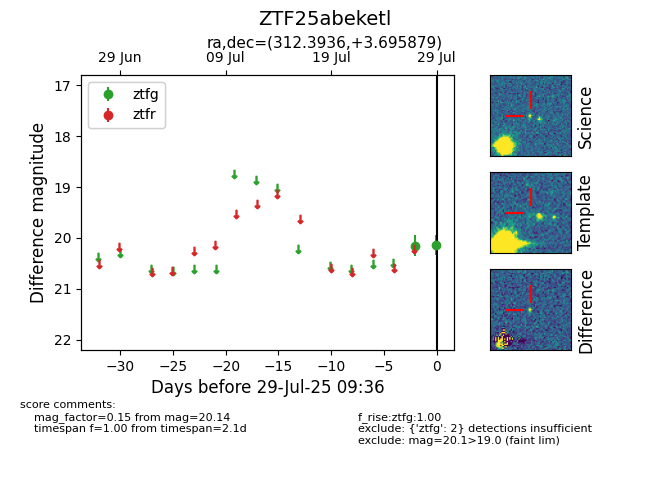

Target ZTF25abeketl at 2025-07-29 09:36, see:
FINK: fink-portal.org/ZTF25abeketl
Lasair: lasair-ztf.lsst.ac.uk/objects/ZTF25abeketl
ALeRCE: alerce.online/object/ZTF25abeketl
alt names
ZTF25abeketl (ztf,fink)
coordinates:
equatorial (ra, dec) = (312.3936,+3.69588)
galactic (l, b) = (50.9058,-24.10477)
photometry
last ztfg=20.14
2 ztfg detections
